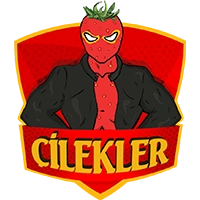
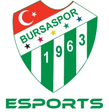

Merhaba, ben Hakan Yüksel. Eskişehir'de yaşıyorum. Küçüklüğümden beri bilgisayar oyunlarına ilgim var ve bu ilgi hayallere doğru devam etti. Bu heyecan ve istekten dolayı Elektronik Spora (Espor) adım attım. League of Legends (LOL) adlı rekabet içeren oyunu profesyonel olarak bazı espor takımlarında oynadım. Hayallerimden birini gerçekleştirdim. Şimdiki hedefim ise Frontend öğrenmek ve bu yazılım sektöründe başarılı olmak.
İlk espor tecrübemdi takıma yedek oyuncu olarak katılmıştım. Bilgisayar oyunlarında yedek oyuncu olur mu diye merak edenler vardır ama amacım Espor sektörüne adım atmak ve bu işi benimsemekti. Bu nedenle, Çileklerin benim için her zaman farklı bir yeri vardır.
Team Cappadocia benim için iyi bir tecrübe oldu. Elimden geleni yaptım ve güzel sonuçlar aldık. İlk oynadığım takım olduğu için heyecan biraz fazlaydı ve bu heyecan biraz oyunlarıma yansıyordu ama kötü sonuçlar almadığımız için mutluyum. Hayallerimi gerçekleştirmeye başlamıştım.

"Eveeet, asıl hedefime ulaşmış bulunmaktayım. Bursaspor benim hayallerimi gerçekleştirdiğim yer diyebilirim. Sezon bizim için iyi geçmemişti ama Turkish Championship League (TCL)'e ilk adımımı Bursaspor ile atmıştım. Zamanında oyunlarını izleyerek kendime bir şeyler kattığım oyunculara karşı oynadığım yerdir TCL. Dünyanın en büyük Espor arenalarından biri olan Ataşehir Watergarden'da Espor arenası açılmıştı o yıl. Şanslı olduğumu düşünüyorum o zamana denk geldiğim için sahneden önce Riot Games TR'nin ofisinde profesyonel maçlar oynadığımız için Espor sahnesi çok farklı bir tecrübeydi. Seyircilere karşı ilk defa çıkmıştım, heyecan üst seviyede. Profesyonel oyunlardan önce, kuaför tarafından saçlarımızın yapılması bile işin ciddiyetini açıklıyordu. Bursaspor hayallerimi gerçekleştirdiğim ve son noktayı koyduğum yerdir. Belki devam etseydim daha iyi yerlere gelebilirdim ama o yaşadığım heyecan ve stres benim için gayet yeterliydi. Böylelikle Espor tecrübem son bulmuş oldu ve diğer hedeflerime doğru yönlendim. Her neyse yazılım beni bekler, bu kadar yazı yeterli. :)"
